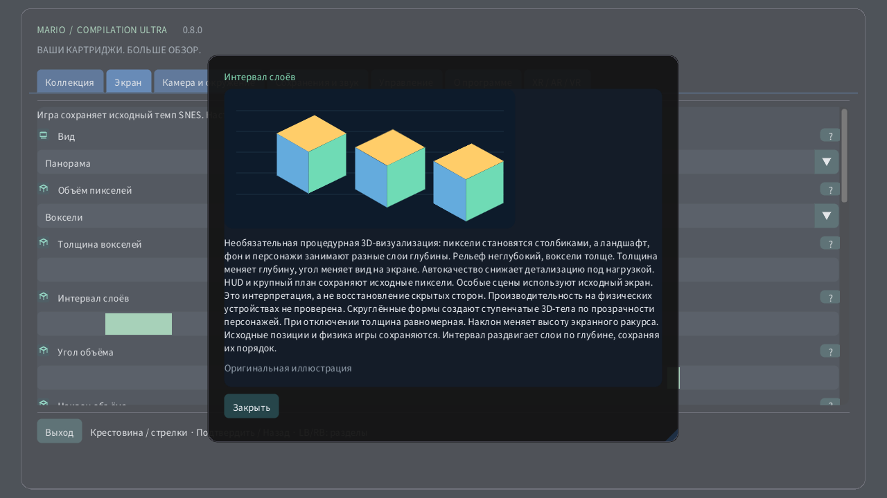

Объём пикселей

На компьютере или мобильном устройстве откройте Экран → Объём пикселей. Сначала попробуйте Рельеф пикселей для небольшой глубины, затем Воксели. Толщина меняет объём каждого пикселя, а интервал раздвигает слои без изменения их порядка. На Quest используйте вкладку Объём пространственного пульта. На часах коронка приближает изображение от всей области до исходного экрана.
- 0 · Исходное 2D
- 1 · Рельеф пикселей
- 2 · Воксели
Необязательная процедурная 3D-визуализация: пиксели становятся столбиками, а ландшафт, фон и персонажи занимают разные слои глубины. Рельеф неглубокий, воксели толще. Толщина меняет глубину, угол меняет вид на экране. Автокачество снижает детализацию под нагрузкой. HUD и крупный план сохраняют исходные пиксели. Особые сцены используют исходный экран. Это интерпретация, а не восстановление скрытых сторон. Производительность на физических устройствах не проверена. Скруглённые формы создают ступенчатые 3D-тела по прозрачности персонажей. При отключении толщина равномерная. Наклон меняет высоту экранного ракурса. Исходные позиции и физика игры сохраняются. Интервал раздвигает слои по глубине, сохраняя их порядок.
Настройки с иллюстрациями
- Толщина вокселей
- 1–16 px
- Интервал слоёв
- 1–12 px
- Угол объёма
- −30° … +30°
- Наклон объёма
- −30° … +30°
- Скруглённые формы вокселей
